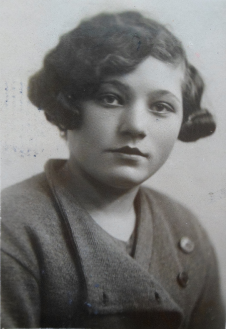
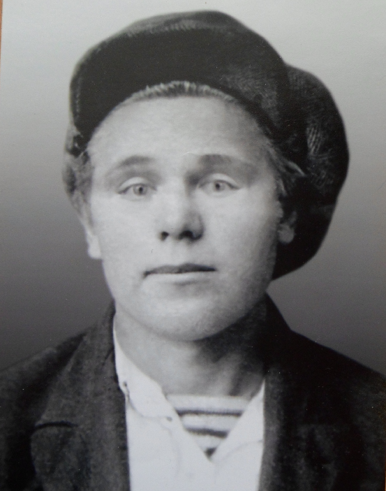
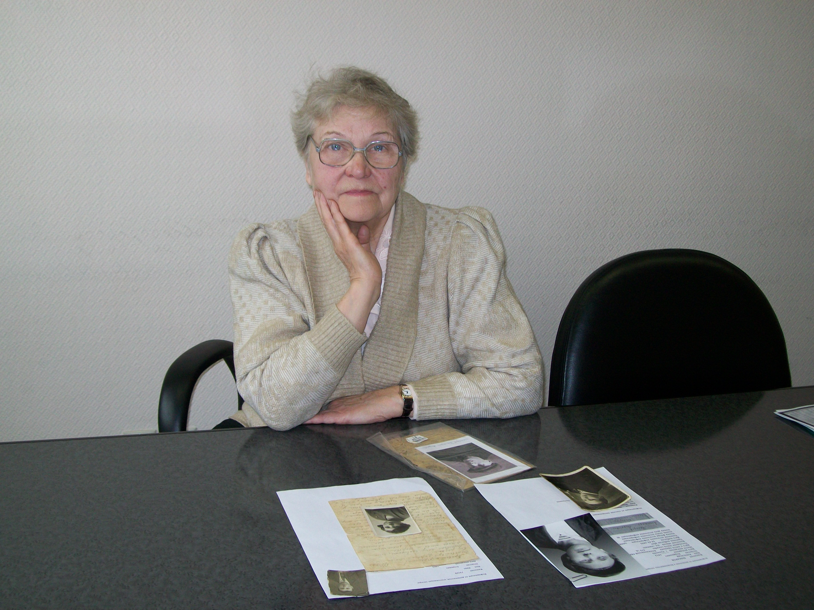
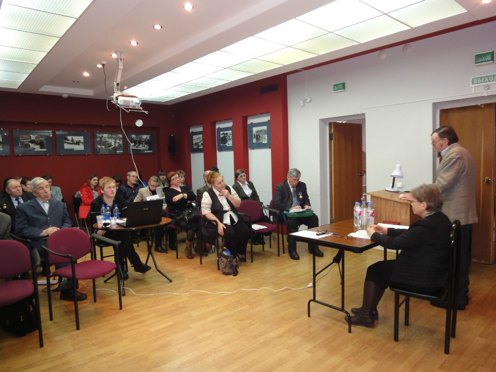
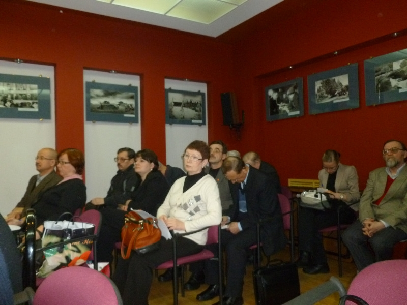

|
ХРАНИТЕЛЬ ПАМЯТИ
Продолжение. Начало на 1 странице.
Муж другой тети Дины Михайловны КУДРЯШОВ Иван Кузьмич родился в 1904 г. Жил в Калинине на 3-й ул. Кирова. Работал в пожарной части. В армию был призван Пролетарским РВК г. Калинина в 1941 г. Воевал в составе 64 Краснознаменной морской стрелковой бригады. Погиб в бою 12 мая 1942 г. у дер. Егорьевское Николо-Пустынского сельсовета Погорельского (Зубцовского) р-на Калининской области.
Непонятно только каким это чудным образом Иван Кузьмич был перезахоронен и увековечен в братской могиле, что у дороги из Гусево в Тархово в Оленинском р-не Тверской области. В приложении к учетной карточке этого воинского захоронения – списках захороненных он записан под № 130. В первом томе Книги памяти Тверской области на стр. 195 читаем, что рядовой Кудряшов И.К., 1904 года рождения, погибший в мае 1942 г. похоронен в дер. Егорье Бельского р-на Калининской области. По данным военного комиссариата Тверской области воинов, погибших в мае 1942 г. у дер. Егорьевскре Погорельского р-на перезахоранивали на самом деле в братскую могилу в дер. Кучино Зубцовского р-на Тверской области. Это подтверждается и записью в 11-м, дополнительном, томе Книги памяти Тверской области: «КУДРЯШОВ Иван Кузьмич родился в 1904 г. Красноармеец. Погиб, май 1942. Похоронен: Зубцовский район, дер. Кучино. (Книга памяти,Братские могилы, Зубцовский район)».
Хочется надеяться, что после этой публикации военный комиссариат области и его отделы на местах исправят ошибки и увековечат имя красноармейца по месту его действительного захоронения в братской могиле в дер. Кучино.
 Брат мамы Дины Михайловны ГУСЕВ Иван Егорович родился в 1903 г. в дер. Ветлино Калининского р-на. Был мобилизован Калининским РВК 25 июня 1941 г. По донесению этого же РВК в Управление по учету потерь от 22 мая 1947 г. учтен как пропавший без вести в августе 1941 г. Больше о нем ничего не известно. Только воевавшие вместе с ним и вернувшиеся с фронта земляки – однополчане рассказали родственникам, что в одном из боев его подразделение стало без приказа отступать, проще говоря, побежало. А Иван Егорович не побежал. Он остался выполнять поставленную задачу: держать оборону. В Книге памяти Тверской области, Калининский р-н, почему-то год рождения у него 1914 и по решению в Управлении по учету потерь пропал без вести в январе 1942 г. Брат мамы Дины Михайловны ГУСЕВ Иван Егорович родился в 1903 г. в дер. Ветлино Калининского р-на. Был мобилизован Калининским РВК 25 июня 1941 г. По донесению этого же РВК в Управление по учету потерь от 22 мая 1947 г. учтен как пропавший без вести в августе 1941 г. Больше о нем ничего не известно. Только воевавшие вместе с ним и вернувшиеся с фронта земляки – однополчане рассказали родственникам, что в одном из боев его подразделение стало без приказа отступать, проще говоря, побежало. А Иван Егорович не побежал. Он остался выполнять поставленную задачу: держать оборону. В Книге памяти Тверской области, Калининский р-н, почему-то год рождения у него 1914 и по решению в Управлении по учету потерь пропал без вести в январе 1942 г.
 Двоюродная сестра Дины Михайловны - ЛИЗУНОВА Анна Ивановна родилась в дер. Ветлино Калининского р-на в 1920 г. Перед войной жила вместе с мамой Екатериной Егоровной в г. Калинине. Когда город освободили, была направлена на курсы медсестер. После их окончания – санитарка 417 отдельного медсанбата 331 стрелковой дивизии. Не дожила до Победы всего три месяца. 14 февраля 1945 г. погибла во время бомбежки у дер. Грюнвальде в Восточной Пруссии. Похоронена в братской могиле на северной окраине пос. Большие Горки Гвардейского р-на Калининградской области. Несколько месяцев родственники не показывали Екатерине Егоровне пришедшую с фронта похоронку, боялись. От этого горе матери не стало меньше. Когда все открылось, пыталась наложить на себя руки, вернулась жить в Ветлино. Потом ей пришла посылка от Аниных подруг, прислали кофточки, платья и другие вещи. Все вещи Анна Егоровна раздарила знакомым и родственникам дочери.
Весной 1942 г. в семью двоюродного брата Дины Михайловны ЛЕОНОВА Михаила Сергеевича пришло извещение, в котором сообщалось, что красноармеец 54 отдельной кавалерийской дивизии ЛЕОНОВ М.С. погиб в бою 23 марта 1942 г. у дер. Днепрово Смоленской области. Сейчас Михаил Сергеевич внесен в списки захороненных братской могилы № 10 в дер. Домашенка Новодугинского р-на Смоленской области. И только несколько лет спустя, уже после войны, выяснилось, что Михаил Сергеевич тогда не погиб. В начале пятидесятых одной из его сестер стали приходить письма из Бельгии, в которых он сообщал, как попал в плен, как в конце войны был освобожден союзниками, которые настоятельно рекомендовали не возвращаться на родину, и предложили на его выбор девять стран для дальнейшего проживания. Выбрал Бельгию, там женился на русской девушке, также хлебнувшей лиха в плену и ставшей невозвращенкой. Потом у них родились дети. Семья жила в коммуне Флерон, провинция Льеж.
Для справки: после войны эмигрировало в другие страны более 180 тыс. бывших военнослужащих Красной Армии («Россия и СССР в войнах XX века», с. 463).
 Есть в этой истории и еще один удивительный факт, с которым мы встречаемся впервые. Пять родственников Дины Михайловны МАКАРОВ Д.А., МАКАРОВ Е.Д., МАКАРОВ А.А., СЕРЯКОВ Ф.С. и КУДРЯШОВ И.К. воевали на Тверской земле и здесь же погибли. В год 70-летия полного освобождения от немецко-фашистских захватчиков территории Тверской области в её нынешних границах, которое скромно пока отмечалось в некоторых районах нашего региона в марте 2013 г., склоним головы, вспомним имена и почтим память наших земляков отдавших свои жизни за свою малую Родину.
Расставаясь с Диной Михайловной, мы подарили ей нашу IV главу Книги Памяти советских солдат Великой Отечественной войны 1941 - 1945 годов, считавшихся пропавшими без вести (Калининская область в её довоенных границах). А через два дня она позвонила и с радостью сообщила, что обнаружила в этой книге запись о ещё одном родственнике, двоюродном брате своей мамы. Красноармеец ГУСЕВ Иван Васильевич родился в 1907 г. в дер. Ветлино Калининского р-на. Был призван 23 июня 1941 г. Калининским РВК. Пехотинец. 24 августа 1941 г. под г. Тарту в Эстонии попал в плен. Погиб в шталаге IB Хохенштайн. Похоронен и увековечен в братской могиле в пос. Зеленый Бор Черняховского р-на Калининградской области. В Книге памяти Тверской области увековечен как пропавший без вести в январе 1942 г.
Рассказывая о своих родственниках и уточняя вместе с нами их судьбы, Дина Михайловна несколько раз повторила, что теперь она единственный ХРАНИТЕЛЬ Памяти о своих не вернувшихся с войны родственниках, что она и дальше будет по крупицам собирать любую информацию о жизни и смерти этих людей, чтобы передать эти знания их потомкам, на деле сохранить в семьях связь поколений.
|
1943 год в истории Тверского края: результаты исследований, проблемы, дискуссии.
Так называлась научная конференция, проходившая 19 марта в музее Калининского фронта. Её организаторами были Тверской государственный объединенный музей, Тверская областная библиотека им. Горького, Тверское областное краеведческое общество, участниками – ученые, музейщики, архивисты, преподаватели учебных заведений, библиотекари, краеведы из Твери и Тверской области, студенты сельскохозяйственной академии. Конференция была посвящена 70-летию освобождения от оккупантов современной территории нашей области в ходе ликвидации ржевско-вяземского выступа в марте 1943 г.
Поскольку тематика выступлений на конференции была достаточной широкой: от определения для области значения военных событий 1943 г. и проблем Ржевской битвы до вопросов помощи жителей края и партизан Калининскому фронту и увековечения памяти о событиях военного времени, работали две секции. Практически все выступления активно обсуждались участниками конференции, а ряд озвученных проблем вызвал жаркие дискуссии.
К таким относится, в частности, утверждение, что освобождение нашей области в современных границах завершилось в марте 1943 г. в ходе ликвидации ржевско-вяземского выступа. Но факт этот игнорируется, и ежегодно очередная годовщина освобождения от оккупантов областной территории связывается с освобождением в июле 1944 г. последних районных центров Калининской области в границах того времени. То, что в августе того же года они вошли в состав Псковской области и же 69 лет не являются «калининскими-тверскими», не принимается во внимание. Получается, что жители нашей области отмечают ежегодно освобождение псковских территорий, что допустимо и неплохо, но при этом забывается значительное событие в истории «современной» области.
Не все участники конференции согласились с таким утверждением. Они мотивировали это тем, что акцентируя внимание на марте 1943 г., мы можем забыть тех, кто воевал на территории районов, отошедших к Псковской области, в частности, калининских партизан. Вряд ли этот аргумент можно считать весомым, ведь жители нашей области помнят о своих земляках, воевавших на разных фронтах Великой Отечественной войны. Противникам констатации факта освобождения области в марте 1943 г. довольно убедительно возразила и представитель Бельского района. В годы войны Бельский район входил в состав Смоленской области, лишь в 1950-е гг. он вошел в состав Калининской области. Но смоляне уже не считают его историю составной частью истории их области. По мнению представителя Бельского района, если и мы не будем говорить об истории области в современных границах, то история их района вообще выпадает из истории обоих регионов.
 На конференции традиционно разгорелся спор о существовании Ржевской битвы. Много вопросов вызвали освещение современной трактовки понятий «событие» и «факт» и утверждения о реконструкции исторических событий и о субъективности этого процесса. Студенты сельхозакадемии активно участвовали в обсуждение вопроса о стоимости снабжения партизанских отрядов в современных ценах. В целом, конференция была интересной, бурной, но её участники остались на своих позициях.
В следующем году планируется издание сборника с материалами конференции. Также был поставлен вопрос о необходимости проведения научной конференции по проблемам Ржевской битвы. В связи с тем, что сотрудники областного музея будут заняты работами, связанными с переездом музея в другое здание, вряд ли они могут быть организаторами такой конференции в ближайшее время. В то же время встречи исследователей военной истории края необходимы для того, чтобы обозначить направления её изучения, определить наиболее значимые проблемы и собственные позиции по их трактовке.
С.А. Герасимова, главный научный сотрудник Тверского государственного объединенного музея. |